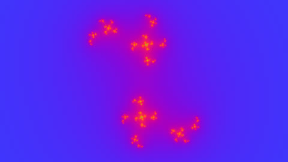

HomeAccueil / ExamplesExemples
Animated Julia setEnsemble de Julia animé
Same iteration, but c is fixed and z starts at the pixel; c runs on a circle around the Mandelbrot border.Même itération, mais c est fixé et z part du pixel ; c décrit un cercle autour du bord de Mandelbrot.

CategoryCatégorie: FractalsFractales - julia.glsl - 20 lineslignes - File on GitHubFichier sur GitHub
In the program: Examples, choose it, Add to the list. Or copy the code into a file next to the program and drop it on the window.Dans le programme : Exemples, choisissez-le, Ajouter à la liste. Ou copiez le code dans un fichier et glissez-le sur la fenêtre.
CodeCode
julia.glsl
// SPDX-License-Identifier: LicenseRef-ShaderToMP4-Proprietary
// Copyright (C) 2026 Patrick JAILLET. Tous droits reserves.
// fr: Ensemble de Julia animé — Même itération, mais c est fixé et z part du pixel ; c décrit un cercle autour du bord de Mandelbrot.
// en: Animated Julia set — Same iteration, but c is fixed and z starts at the pixel; c runs on a circle around the Mandelbrot border.
void mainImage(out vec4 fragColor, in vec2 fragCoord) {
vec2 z = (fragCoord - 0.5 * iResolution.xy) / iResolution.y * 3.0;
vec2 c = 0.7885 * vec2(cos(iTime * 0.3), sin(iTime * 0.3));
float n = 0.0;
for (int i = 0; i < 200; i++) {
z = vec2(z.x * z.x - z.y * z.y, 2.0 * z.x * z.y) + c;
if (dot(z, z) > 64.0) break;
n += 1.0;
}
float s = n - log2(log2(dot(z, z))) + 4.0;
vec3 col = n >= 199.0 ? vec3(0.02) : 0.5 + 0.5 * cos(s * 0.15 + vec3(4.0, 2.0, 0.0));
fragColor = vec4(col, 1.0);
}